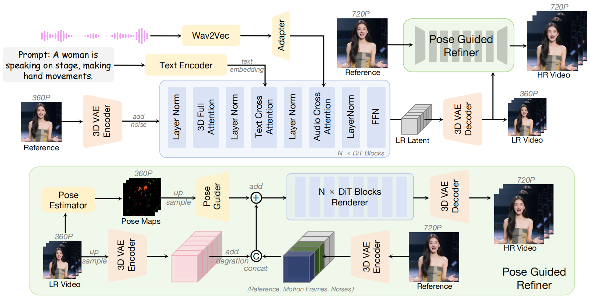

Audio-driven human animation has attracted wide attention thanks to its practical applications. However, critical challenges remain in generating high-resolution, long-duration videos with consistent appearance and natural hand motions. Existing methods extend videos using overlapping motion frames but suffer from error accumulation, leading to identity drift, color shifts, and scene instability.
In this work, we propose InfinityHuman, a coarse-to-fine framework that first generates audio-synchronized representations, then progressively refines them into high-resolution, long-duration videos using a pose-guided refiner. Since pose sequences are decoupled from appearance and resist temporal degradation, our pose-guided refiner employs stable poses and the initial frame as a visual anchor to reduce drift and improve lip synchronization.
InfinityHuman preserves high-resolution visual consistency over extended durations, while generating lifelike hand and body movements.
Our framework follows a coarse-to-fine pipeline, where audio-synchronized pose sequences serve as a stable intermediate representation. A pose-guided refiner, anchored by the initial frame, progressively reconstructs long-term, high-resolution videos while suppressing identity drift.

@misc{li202Xinfinityhuman,
title={InfinityHuman: Towards Long-Term Audio-Driven Human Animation},
author={Xiaodi Li and Pan Xie and Yi Ren and Qijun Gan and Chen Zhang and
Fangyuan Kong and Xiang Yin and Bingyue Peng and Zehuan Yuan},
year={202X},
eprint={XXXX.XXXXX},
archivePrefix={arXiv},
primaryClass={cs.CV}
}